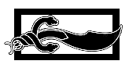

{kind=link}
Prologue: Lightnings

See also M'Hael.
Chapter 1: High Chasaline
Chapter 2: The Butcher's Yard
Chapter 3: Hill of the Golden Dawn

Chapter 4: Into Cairhien
Chapter 5: A Broken Crown
Chapter 6: Old Fear, and New Fear
Chapter 7: Pitfalls and Tripwires

Chapter 8: The Figurehead
Chapter 9: A Pair of Silverpike
Chapter 10: Unseen Eyes
Chapter 11: An Oath
Chapter 12: A Morning of Victory
Chapter 13: The Bowl of the Winds
Chapter 14: White Plumes
Chapter 15: Insects
Chapter 16: A Touch on the Cheek
Chapter 17: The Triumph of Logic
Chapter 18: As the Plow Breaks the Earth
Chapter 19: Diamonds and Stars
Chapter 20: Patterns Within Patterns
Chapter 21: Swovan Night
Chapter 22: Small Sacrifices
Chapter 23: Next Door to a Weaver
Chapter 24: The Kin
Chapter 25: Mindtrap
Chapter 26: The Irrevocable Words
Chapter 27: To Be Alone
Chapter 28: Bread and Cheese
Chapter 29: The Festival of Birds
Chapter 30: The First Cup
Chapter 31: Mashiara
Chapter 32: Sealed to the Flame
Chapter 33: A Bath
Chapter 34: Ta'veren
Chapter 35: Into the Woods
Chapter 36: Blades
Chapter 37: A Note from the Palace
Chapter 38: Six Stories
Chapter 39: Promises to Keep
Chapter 40: Spears

Chapter 41: A Crown of Swords